Integração com a Amazon
A integração com a Amazon liga a sua conta na Amazon ao ERP da Olist. Com ela, você importa produtos e pedidos, envia estoque e preços e relaciona situações, recebimentos, fretes e categorias.
No catálogo há três canais: Amazon, Amazon FBA Classic e Amazon FBA Onsite. Depois de instalado, cada um é configurado em Início > Integrações, no card, em gerenciar, nas abas Conexão, Produtos, Pedidos e Mapeamentos. O Amazon Ads é uma autenticação dentro da conexão da Amazon, não outro canal.
Importante
- Para o ERP preencher a forma de pagamento dos pedidos importados, habilite Importar forma de recebimento nos pedidos e relacione as formas.
- O código de recebimento ou de frete só entra na linha quando você clica em Selecionar.
- Destacar uma categoria na árvore não a atribui. Confirme a seleção.
- Com a reserva de estoque da conta ligada, a ajuda de Lançamento de estoque para saídas não recomenda o lançamento automático ao salvar o pedido.
- O menu do card tem Inativar integração, Excluir todos os anúncios no ERP e Excluir integração. Não escolha essas opções se a intenção for só consultar.
Instruções
Como instalar o canal
- Acesse Início > Integrações.
- Clique em adicionar integração.
- Localize Amazon, Amazon FBA Classic ou Amazon FBA Onsite.
- Inicie a instalação do canal desejado.
- Na etapa Conexão, informe o Nome da integração no ERP e conclua a autenticação com a Amazon. O canal instalado passa a aparecer em Minhas Integrações com gerenciar.
Como consultar a conexão da Amazon
- Acesse Início > Integrações.
- No card Amazon ERP, clique em gerenciar.
- Abra a aba Conexão.
- Confira o Nome da integração no ERP e o status dos cards Amazon ERP e Autenticação Amazon Ads. Para só consultar, não clique em Salvar nem inicie uma nova autenticação.
Como configurar produtos da Amazon
-
No gerenciar da Amazon ERP, abra Produtos.
-
Abra Receber Produtos.
-
Em Ao importar produtos, escolha Importar imagens como anexos ou Apenas importar a URL externa das imagens.
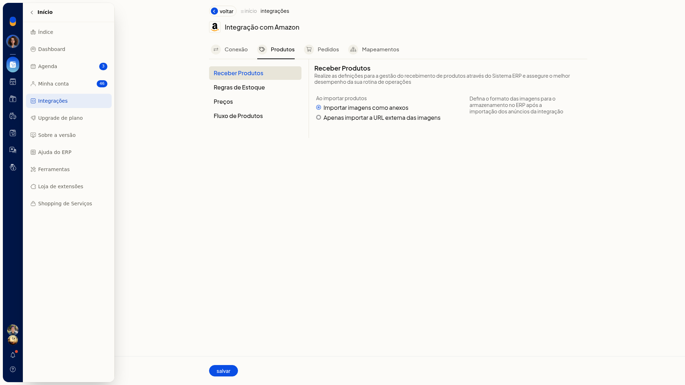
-
Abra Regras de Estoque.
-
Em Atualizar estoque na loja virtual a partir do ERP, escolha Não atualizar, Enviar saldo físico ou Enviar saldo disponível.
-
Na tabela de depósitos, defina quais depósitos entram na conta. A tabela traz Todos e Próprios. A tela também mostra um aviso sobre depósitos de empresa conectada que não recebem dados.
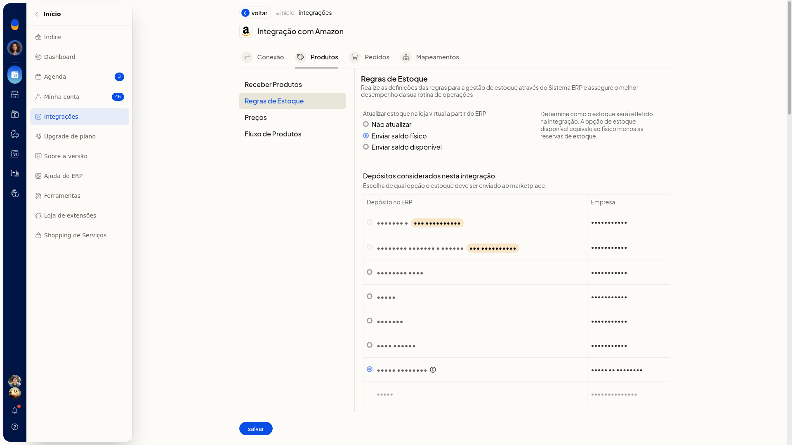
-
Em Lançamento de estoque para saídas, escolha uma opção:
- Usar configuração padrão da conta
- Manual
- Automático ao autorizar a nota fiscal
- Automático ao salvar a nota fiscal
- Automático ao salvar o pedido
- Automático ao marcar pedido como enviado
-
Marque Utilizar estoque de segurança se quiser usar o estoque de segurança.
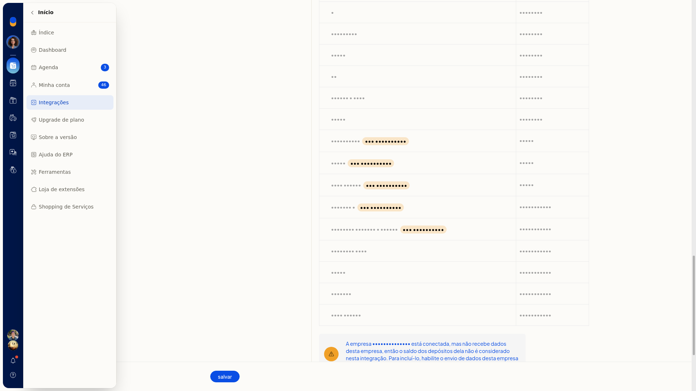
-
Abra Preços.
-
Defina o preço enviado. Em Conforme regras de preço, informe o percentual com vírgula e duas casas decimais e escolha Base simples ou Base por dentro.
-
Marque Sugestão de preços (beta) se quiser usar a sugestão de preços.

- Abra Fluxo de Produtos.
- Marque Enviar dias para preparação ao sincronizar se quiser enviar os dias de preparação na sincronização dos produtos.
- Clique em Salvar para gravar produtos, estoque, preço e dias de preparação.
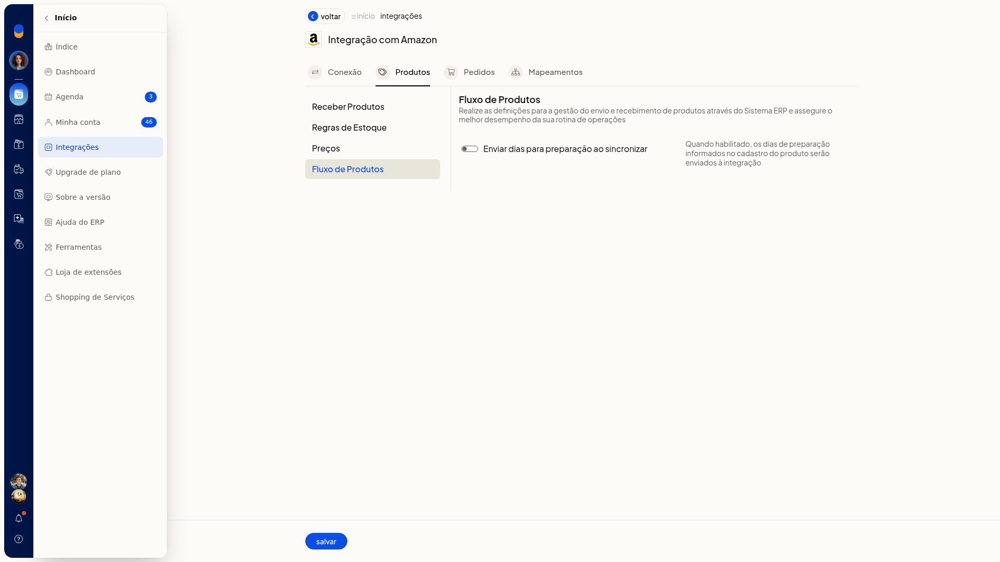
Como configurar pedidos e custos da Amazon
- No gerenciar da Amazon ERP, abra Pedidos.
- Abra Fluxo de Pedidos.
- Ajuste a entrada do pedido:
-
Importar valor do frete: ligue para importar o frete do pedido.
-
CEP: escolha Não, Apenas se bairro não está informado ou Sempre.
-
DBA: escolha Formato PDF fornecido pela Amazon ou Impressora térmica.
-
Enviar rastreamento ao alterar situação para enviado: ligue para enviar o rastreamento nessa troca de situação.
-
Intermediador: a opção Sem intermediador está na tela.
-
Divergência de pagamento: escolha Utilizar valor de pagamento integrado (Recomendado) ou Considerar pagamento como Não integrado.
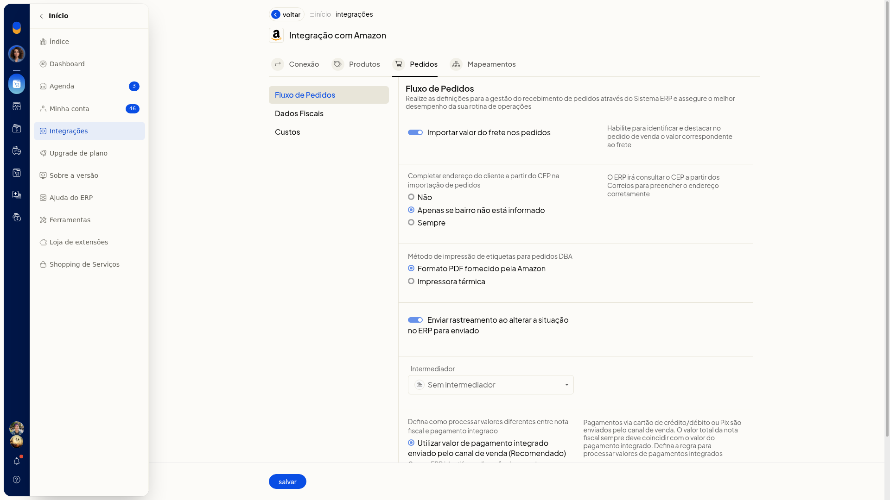
-
Abra Dados Fiscais.
-
Em Envio NFe, escolha Automático ao autorizar nota fiscal ou Manual.
-
Em natureza, selecione a natureza de operação, como Venda de mercadorias.
-
Marque Definir natureza diferente para contribuintes ICMS se quiser outra natureza para contribuintes de ICMS.
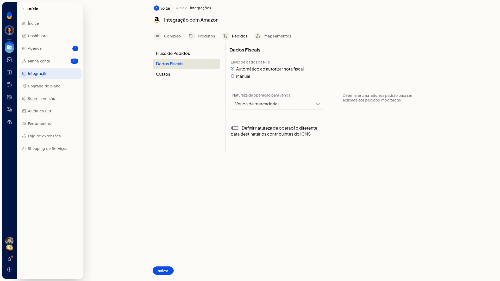
-
Abra Custos.
-
Na tabela, use Editar, Remover ou adicionar. As colunas são Categoria, Taxa (%), Valor mínimo de comissão por unidade (R$) e Ações.
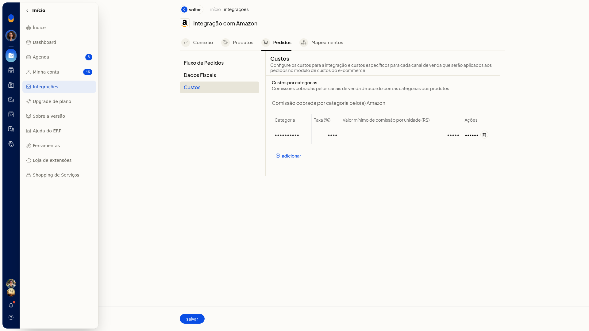
-
Para uma nova comissão, clique em adicionar, escolha a Categoria, informe a Taxa (%) com vírgula e o Valor mínimo de comissão por unidade (R$) em reais com vírgula.
-
Confirme para gravar a comissão. Clique em Cancelar para fechar sem alterar a tabela. Em seguida, clique em Salvar na tela para gravar pedido, nota e custos.
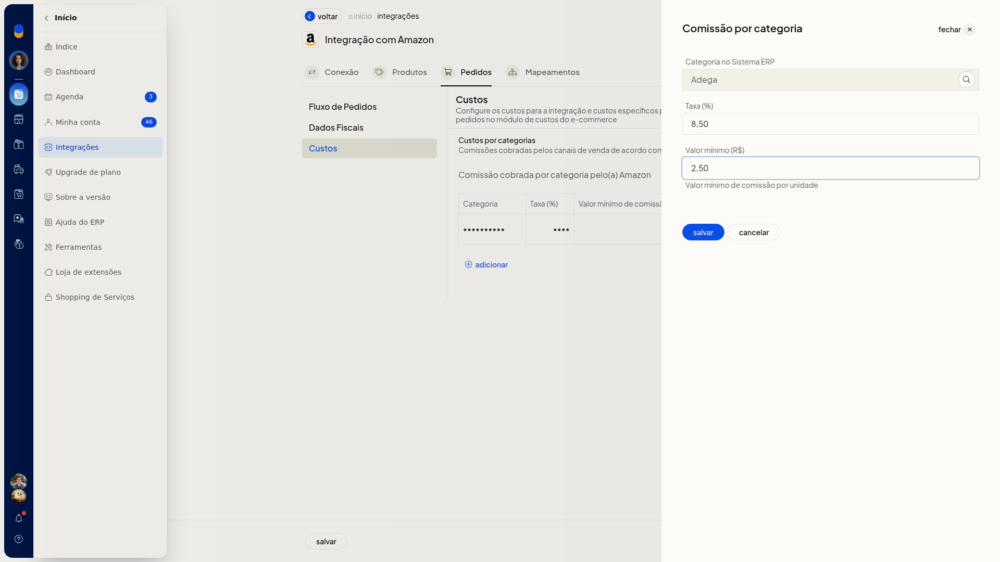
Como mapear dados da Amazon
- No gerenciar da Amazon ERP, abra Mapeamentos.
- Abra Situações de Pedidos.
- Ligue Permite retroceder situação dos pedidos na sincronização de situações somente se quiser que a sincronização volte a situação do pedido.
- Relacione cada situação da Amazon com uma situação do ERP. O seletor traz Selecione, Em aberto, Faturado, Cancelado, Aprovado, Preparando envio, Enviado, Entregue, Pronto para envio, Dados incompletos, Não entregue e Em devolução.
- Use adicionar situações padrão ou adicionar mapeamento de situação quando precisar incluir linhas. O mapeamento visto na tela é:
-
Pending/Pendente para Em aberto
-
Unshipped/Pagamento autorizado para Faturado
-
PartiallyShipped/Parcialmente enviado para Pronto para envio
-
Shipped/Enviado para Enviado
-
Canceled/Cancelado para Cancelado
-
InvoiceUnconfirmed/Nota pendente para Enviado
-
PendingAvailability/Pedido realizado (pré-ordem) para Faturado
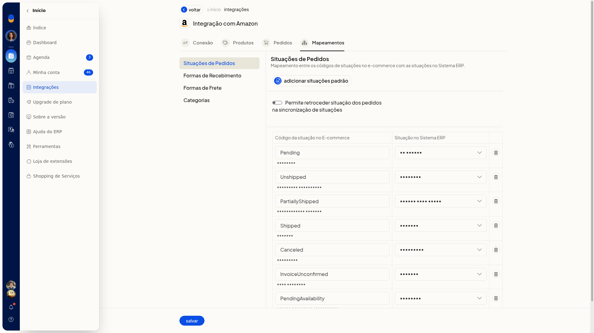
-
Abra Formas de Recebimento.
-
Com Importar forma de recebimento nos pedidos desligado, a tela mostra Você não possui formas de recebimento relacionadas e o botão habilitar importação. Há também o link vídeo explicativo.
-
Ligue Importar forma de recebimento nos pedidos para exibir a forma padrão, a categoria financeira e a tabela. Ao escolher uma forma como Pix, informe Meio (Banco ou Gateway) e Meio de recebimento.
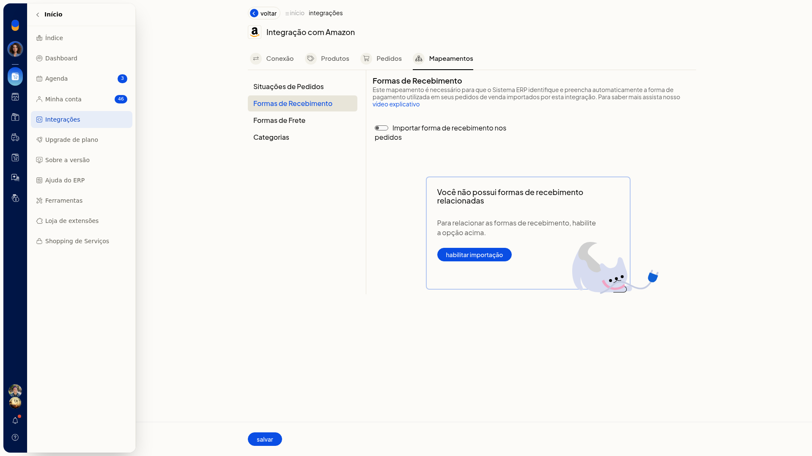
-
Abra Formas de Frete.
-
Inclua uma forma, como Retirar pessoalmente, e informe o Código da forma de frete no diálogo.
-
Clique em Selecionar para o código entrar na linha. Cancelar fecha o diálogo sem preencher a linha.
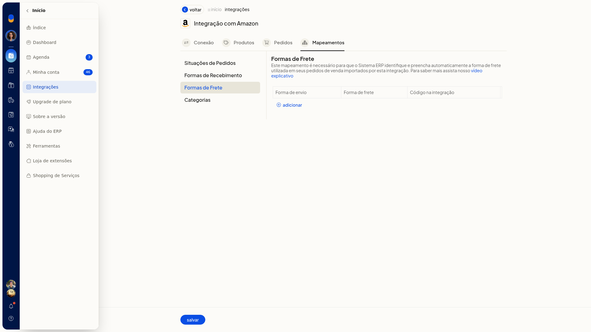
- Abra Categorias.
- No seletor em árvore, destaque a categoria e confirme a atribuição. Fechar o seletor sem confirmar não atribui a categoria destacada.
- Clique em Salvar para gravar situação, recebimento, frete e categoria.
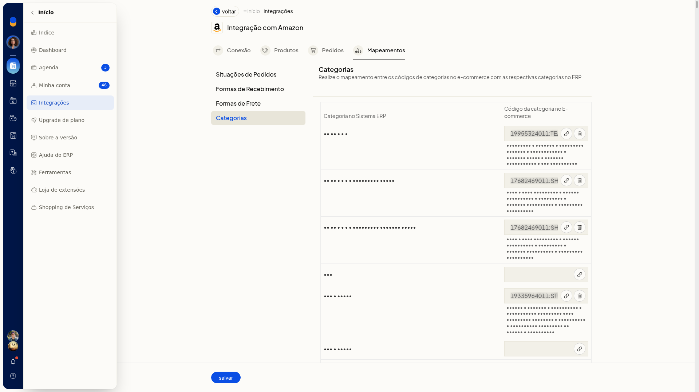
Como relacionar a forma de recebimento
-
Com Importar forma de recebimento nos pedidos ligado, abra o relacionamento da forma, por exemplo Cartão de crédito.
-
Informe o Código da forma de recebimento no diálogo.
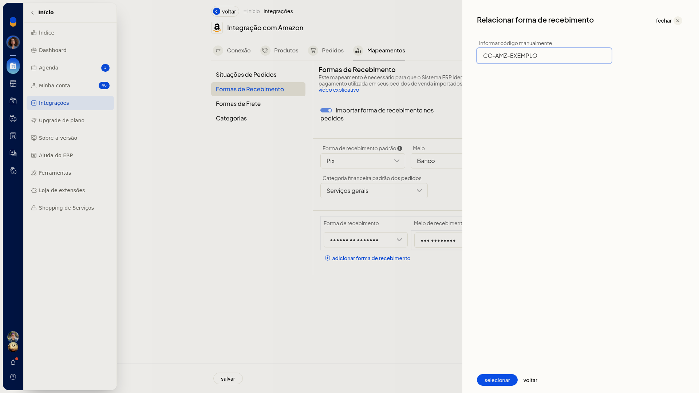
-
Para descobrir o código por um pedido, use a busca por pedido no mesmo diálogo, em vez do código manual.
-
Clique em Selecionar para o código passar para a linha. Cancelar fecha o diálogo e volta ao mapeamento sem preencher a linha.
Como configurar a Amazon FBA Classic
- Acesse Início > Integrações.
- No card Amazon FBA Classic, clique em gerenciar.
- Use as abas Conexão, Produtos, Pedidos e Mapeamentos. Não há aba Outros.
- Em Produtos, abra Regras de Estoque ou Preços. Não há Receber Produtos nem Fluxo de Produtos.
- Em Preços, escolha uma forma:
- Preço fixo
- Conforme lista de preços, e selecione a Lista
- Conforme regras de preço, com percentual em vírgula e duas casas e Base simples
-
Na regra de preço, informe Valor fixo e adicional em reais. Na faixa de peso, informe De e Até em kg e frete em reais.
-
Clique em Salvar na faixa de peso para gravar a regra. Fechar o diálogo sem Salvar não grava a faixa.
-
Em Pedidos, abra Fluxo de Pedidos, Dados Fiscais ou Custos. Não há envio inbound nem título de anúncio com IA.

-
Em Mapeamentos, abra Formas de Recebimento e relacione as formas depois de habilitar a importação.
-
Clique em Salvar para gravar estoque, preço, pedidos e recebimento.
Como configurar a Amazon FBA Onsite
-
Acesse Início > Integrações.
-
No card Amazon FBA Onsite já instalado, clique em gerenciar.
-
Use as abas Conexão, Produtos, Pedidos e Mapeamentos. Não há aba Outros.
-
Em Produtos, configure só Regras de Estoque e Preços.

-
Em Pedidos, configure só Fluxo de Pedidos, Dados Fiscais e Custos.
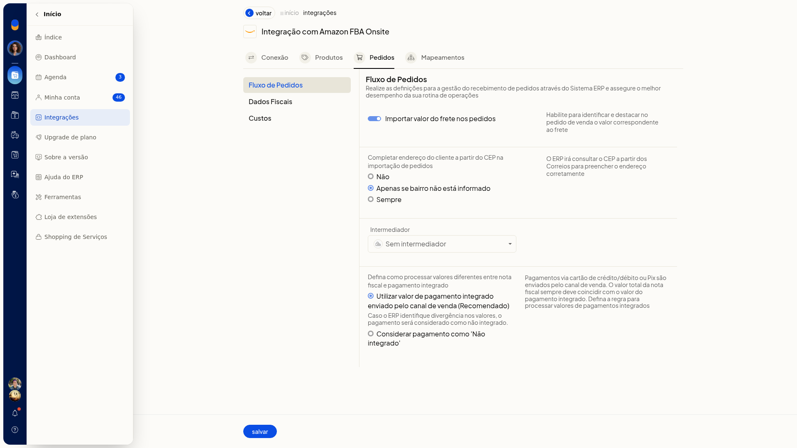
-
Em Mapeamentos, abra Formas de Recebimento.
-
Com a importação desligada, a tela mostra Você não possui formas de recebimento relacionadas. Clique em habilitar importação e relacione as formas. O link vídeo explicativo também está na tela.
-
Clique em Salvar para gravar a configuração.
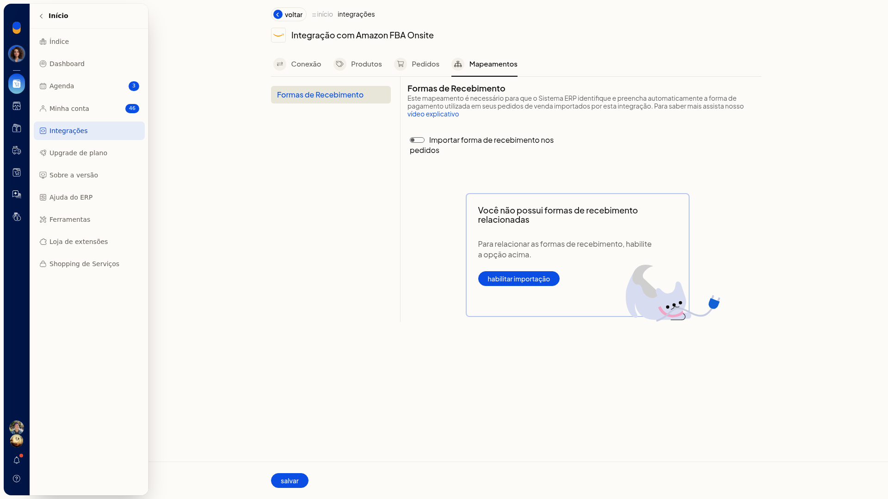
Como autenticar o Amazon Ads
- No gerenciar da Amazon ERP, fique na aba Conexão.
- Localize o card Autenticação Amazon Ads.
- Use o link Saiba mais para abrir a página pública de Sponsored Products da Amazon.
- Inicie a autenticação no card Autenticação Amazon Ads para abrir o consentimento da Amazon. A autenticação fica neste conector, sem um canal separado de Amazon Ads.
Como usar o menu do card
-
Em Minhas Integrações, abra o menu do card Amazon ERP. O card da Amazon FBA Classic tem o mesmo tipo de menu.
-
As opções são Inativar integração, Excluir todos os anúncios no ERP e Excluir integração.
-
Feche o menu sem escolher nenhuma opção se não quiser inativar ou excluir.
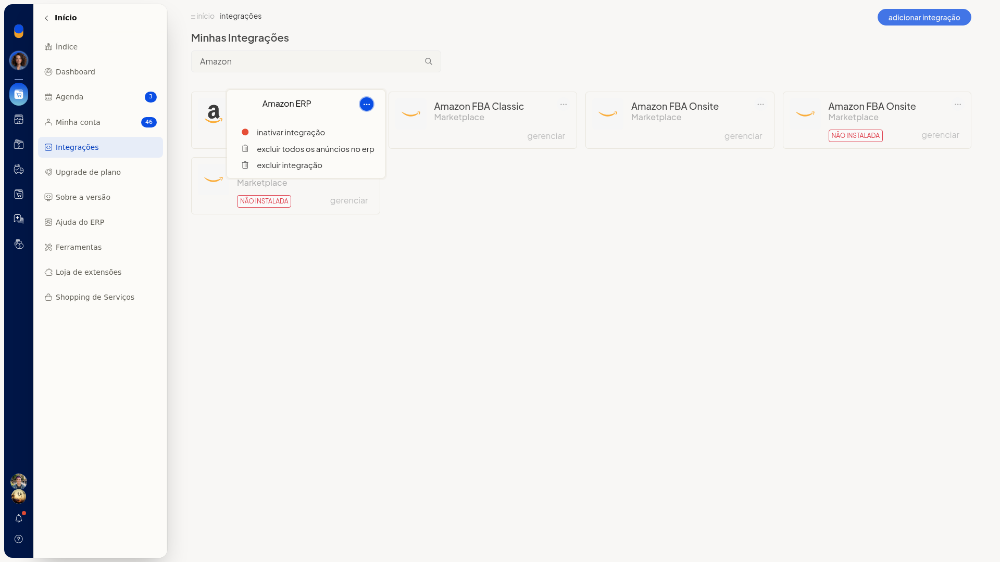
Resultado
O canal instalado fica em Minhas Integrações, com gerenciar. Na conexão autenticada, os cards Amazon ERP e Autenticação Amazon Ads aparecem como conectada. Com a importação de recebimento desligada, Formas de Recebimento mostra Você não possui formas de recebimento relacionadas e habilitar importação.
Informações adicionais
O Amazon Ads não é um canal do catálogo
A autenticação de anúncios fica no card Autenticação Amazon Ads, na aba Conexão da Amazon.
A FBA Classic e a FBA Onsite têm menos opções
Em Produtos, só há Regras de Estoque e Preços. Em Pedidos, só há Fluxo de Pedidos, Dados Fiscais e Custos. Em Mapeamentos, só há Formas de Recebimento.
A exclusão de anúncios pode não aparecer
Excluir todos os anúncios no ERP só fica disponível quando esse recurso foi liberado para a empresa. Se a opção não aparecer para você, peça acesso ao administrador da conta.